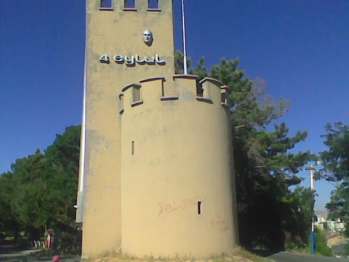

YİĞİDİN HARMAN OLDUĞU YER: SİVAS
İç Anadolu Bölgesi'nin doğusunda yükselen güzel memleketim Sivas, yüzölçümü bakımından Türkiye'nin Konya'dan sonra ikinci büyük kentidir. Anadolu'daki tarihi İpek Yollarını birbirine bağlayan memleketim, İç Anadolu'nun yüksek yaylalarından başlayan ve doğuya doğru gittikçe sarp dağlara dönüşen bir alan üzerine kurulmuştur.
Yiğidin harman olduğu yer olan Sivas'ta birçok kültürel miras ve gezilecek yer bulunmaktadır.
Sivas'ın Yıldız Köpeği: KANGAL
Sivas şehrini tanıtırken Sivas Kangalına değinmemek olmazdı tabii :)
Sivas kangalları hem biz insanlara en sadık dost olurlar hem de evimizi canları pahasına korurlar.
Onlar güvenebileceğiniz en sadık hayvanlar :)
Sivas Kangalının fiziksel özellikleri
- Sivas kangalı “dev köpekler” grubunda yer alan gerçekten iri cüsseli bir köpek ırkıdır.
- Sivas kangal köpeklerin yüksekliği dişilerde 72-77, erkeklerdeyse 77-86 santim arasındadır.
- Ağırlıkları ise dişilerde ortalama 41-54, erkeklerdeyse 50-66 kilo arasındadır.
- Tüyleri orta uzunlukta, çift tabakalı, sık ve serttir.
- Kuyrukları çok uzun değildir. Kangal köpekler dikkatliyken kuyruklarını kıvrık tutarlar, rahat olduklarındaysa kuyruklarını genellikle sarkık şekilde tutarlar.
Sivas Kangalının karakteri
- Kangal köpeği karakteri bu köpeğin en önemli özelliğidir, çünkü Sivas kangal karakteri gerçekten mükemmeldir.
- Sivas kangal köpekler çocuklarla çok iyi anlaşırlar, bu sebeple çocuklu aileler için çok uygun bir dosttur.
- Kangal köpeklerinin ısırma potansiyeli düşüktür, bu köpekler iri cüsseli ama sakindirler, nedensiz şekilde saldırganlık sergilemezler.
- Sivas kangal köpeklerin gereksiz havlama eğilimi yoktur, bu köpekler genellikle sessizdir.
- Yalnızlığı severler ve birçok köpek ırkı ile kıyaslandığında bağımsızlıklarına oldukça düşkündürler.

Çifte Minareli Medrese
Taç kapının hemen üzerinde üç yönden akan yazıttan medresenin, İlhanlı Veziri Sahip Şemseddin Mehmet Cüveyni tarafından 1271/1272 yılında yaptırılmıştır. Yapının günümüze ulaşan tek özgün yanı, Anadolu'nun en yüksek taç kapısına sahip görkemli ön cephesidir. Taç kapı üzerinde yükselen iki minare ise adeta Sivas'ın sembolü olmuştur. Anadolu'da yapılmış en abidevi medreselerden biri olup, Dârü'l-hadis adıyla da bilinir. İki katlı, dört eyvanlı bir yapıdır. Taç kapının üzerindeki tuğla minareler çini bezemelidir. Bitkisel ve geometrik motiflerle süslü taşkapı ile yanlarındaki mukarnaslı nişler yapıya hareketli bir görüntü kazandırmıştır. Köşelerde yivli yarım kuleler vardır. Halen sağlam durumda olup ziyaretinize açıktır.
Divriği Ulu Camii
Divriği Ulu Camii ve Darüşşifası olarak bilinen bu yapı topluluğu, cami, darüşşifa ve türbeden meydana gelen bir külliyedir. Anadolu Selçuklu Devleti’ne bağlı Mengücek Beyliği döneminde inşa edilmiştir. Ulu Cami, Süleyman Şah’ın oğlu Ahmet Şah tarafından; Darüşşifa ise eşi Melike Turan Melek tarafından yaptırılmıştır. 1228 yılında başlanıp 1243 tarihinde tamamlanan yapı kompleksinin Baş Mimarı Muğis oğlu Ahlatlı Hürrem Şah'tır.
Başta kapılar ve sütunlar olmak üzere, külliyenin bir çok yerinde bulunan, Ahlatlı ve Tiflisli ustaların ellerinden çıkan, taş işçiliğinin en nadide ve en ince örneklerini yansıtan harikulade motifler tüm dünyanın ilgi ve dikkatini çekmektedir. Bu eseri farklı ve özgün kılan bir diğer özellik de, uzaktan bakıldığında simetrik olduğu düşünülen, fakat özünde asimetrik olan bezemelerde yer alan on binlerce motifin hiç birinin bir daha kendini tekrar etmemesi; kâinattaki farklı varlıkların muhteşem bir ahenk ve denge içerisinde olduklarının taşa nakşedilerek gözler önüne serilmesidir. Mimari üslubu, süsleme ve örtü sistemlerinin dengeli ve uyumlu tasarımıyla önem kazanan bu şaheser, dünyada, görülmeye değer eserler listesinin başında yer almaktadır. Bu büyüleyici eseri anlatmaya sözlerin yetersiz kalacağını Evliya Çelebi yüzyıllar önce şöyle ifade etmiştir: "Methinde diller kısır, kalem kırıktır". Görenleri kendisine hayran bırakan bu muhteşem abide eser, sanat tarihçileri tarafından "Divriği mucizesi", "Anadolu’nun Elhamrası" gibi ifadelerle tanımlanmıştır. 1985 yılında UNESCO tarafından "Dünya Kültür Mirası" listesine alınan, İslam mimarisinin bu başyapıtı, aynı zamanda T.C. Cumhurbaşkanlığı makamının koruması altındadır.
Sarissa Antik Kenti
Sarissa, surlu ve sanıldığından da büyük antik bir kenttir. Yöre halkının buraya “Kuşaklı” demesinin nedeni de buradaki surlardır. Çivi yazılı Hitit tabletleri hem bir kralın varlığını hem de bayram kutlamalarını göstermektedir. Kazılarda açığa çıkarılan, kazı ekibinin “C Binası” dediği 76 metre uzunluğundaki tapınak binası MÖ 1525'e tarihlendirilmektedir. Bina “Hitit kentlerinde bulunanların en büyüğü” olarak tanımlanmaktadır. Mitolojide “Fırtına Tanrısı'nın Hayvanları” arasındaki boğadan burada bir çift bulunması da buradaki tanrının önemli olduğu düşüncesini desteklemektedir. Yakın zamanda bulunan tabletler arasında 18 fal, 3 bayram metni, 12 dinsel kült dokümanı çıkmıştır. Hitit kralının altında kent krallarının ya da yerel kralların bulunduğu bilinmektedir. Burada bulunan kralın adının Mazitima ya da Mimazati olduğu mühürlerden anlaşılmaktadır.

Aşık Veysel Müzesi
Ünlü halk ozanı Aşık Veysel Sarıkışla'da doğmuştur. Bu müze, Aşığın gözlerini çiçek hastalığına kurban verdiği, sonra bir ağaç-adam, bir kuş-adam gibi tabiat makamında çalıp söylemeyi öğrendiği Şarkışla İlçesine bağlı Sivrialan Köyünde 1982’de kuruldu. Aşık Veysel sağlığında ismi duyulup kırk vilayeti, köy enstitülerini gezdikten sonra “ben zaten gözlerimden mahrumum… bütün hislerim kulaklarımda… şehirde o gürültüler kulağımı kapatıyor…” deyip yine aynı köye dönmüş, şimdi müze olan bu evde ölmüştü.

Atatürk Kongre Ve Etnografya Müzesi
1892 yılında Sivas Valisi Memduh Paşa tarafından yapılmıştır.1981 yılına kadar okul olarak kullanılan bina; onarım ve teşhir tanzimi gerçekleştirilerek, 1990 yılında müze olarak ziyarete açılmıştır. İçinde; Sivas Kongresine ait dokümanlar, Atatürk'e ait özel eşyalar, resimler ve yöreye ait etnografik eserler sergilenmektedir. Mustafa Kemal Atatürk ve Heyet-i Temsiliye tarafından 2 Eylül -18 Aralık 1919 tarihleri arasında "Milli Mücadele Karargahı" olarak kullanılan bina Cumhuriyet tarihimizde çok önemli ve müstesna bir yer tutmaktadır.
Mustafa Kemal Atatürk ve arkadaşlarına üç buçuk ay süre ile resmi karargah olarak tahsis edilen bina; Sivas Kongresi içtimalarının burada yapılmış olması Anadolu’daki Milli Mücadele hareketinin teşkilatlandırılarak millet iradesinin her türlü baskının, kişi ve zümre idaresinin üstünde olduğunun bütün dünyaya ispatlanması ve Cumhuriyet yönetiminin temellerinin burada atılmış olması ile tarihi bir hüviyet kazanmıştır.
Tödürge Kaya Mağaraları
Tödürge Kaya Mağaraları; Sivas'ın Zara ilçesinde kayalıklara oyularak oluşturulan ve mesken olarak kullanılan 100 kadar mağara içeriyor. Tödürge köyünün içerisinde, kuzey kısmında bulunan pur kayalıklara barınma, sığınma amacıyla kazılan pek çok mağara, mekan mevcuttur. Söz konusu kaya mağaraları, kolayca işlenen pur kayalara yan yana ve alt alta oyulmuştur. Küçük mekanlar halindedirler. Yaklaşık 100 mağara, görüntüsüyle ziyaretçileri büyülüyor.
Mağaraların bazı kısımlarında taş ve horasanla örülmüş duvarlar ve gözetleme delikleri görülmektedir. Odalarda birisinin duvarında haç işareti vardır.
Tödürge köyü mağaralarının tarihinin Demir Çağına (M.Ö. 1200-750) kadar uzandığı bilgisi bulunmaktadır. Yaklaşık 3-4 bin yıl önce barınma ve sığınma amacıyla yapıldığı tahmin edilen mağaralar, yan yana ve alt alta bulunuyor. Bakıldığında apartman görüntüsünü andıran mağaralarda, küçük odalar yer alıyor. İlk olarak Roma döneminde kullanıldığı tahmin edilen mağaralar daha sonra çeşitli medeniyetlere de ev sahipliği yaptığı biliniyor. Kaya mağaralarının bazı kısımlarında ise horasan harcından örülmüş taş duvarlar ve gözetleme delikleri yer alıyor. Köyü çevreleyen kaya mağaralarının kuzeyinde bulunan büyük kayalıkta ise haç işaretleri göze çarpıyor.

Kangal Balıklı Kaplıca
Kangal balıklı kaplıca, ülkemizde deri hastalıklarından; Sedef Hastalığı (Psoriasis) Ve romatizmal hastalıkların tedavisinde ün yapmış bir kaplıcadır.Bu kaplıcamızın önemi; suyun kimyasal özelliklerinden ve içinde yaşayan balıklardan ileri gelmektedir. Kaplıca suyunun 35+ 0.5 olması ve kimyasal içeriği nedeniyle çeşitli hastalıkları tedavi edici yöre halkı tarafından bilinmekte olup, bu tedavi özelliğinin tüm ülke ve dünya geneline yaygınlaştırılmasına çalışılmaktadır.Diğer taraftan kaplıca suyunda yaşayan balıkların insan vücuduna saldırırcasına gelmeleri hastalıkların bu balıkların iyileştirdiği düşüncesi de oldukça yaygındır. Kaplıcanın bu yönü araştırıcıları fi ziksel, kimyasal, jeolojik, biyolojik ve klinik bulgular elde etmeye yönlendirmiştir.Diğer taraftan pek çok cilt hastası ( Yurt içinden-Yurt dışından ) kaplıcaya gelmekte ve belirli sürelerle havuza girip 'Balık-Su' tedavisi gördükten sonra iyileştiklerini ifade etmektedirler.

Ticaretin Kalbi: Tarihi Taşhan Çarşısı
Taş Han; Atatürk Caddesi ile Mahkeme Çarşısı Caddesinin kesiştiği köşede, Dört Yol mevkisindedir. 19.yüzyılın ikinci yarısında İki katlı, tamamen kesme taştan inşa edilmiş, ortası açık avlulu, dikdörtgen planlı, doğu, güney ve kuzey yanlarındaki yuvarlak kemerli ve demir kanatlıdır üç girişi bulunan bir handır.
Doğu, güney ve kuzey yanlarındaki girişler yuvarlak kemerli ve demir kanatlıdır. Orta avlunun tabanı blok taş döşemeli olup, avluda elips şeklinde taş bir havuz, ortada zıt yönde çift başlı aslanların ağzından su akmaktadır. Taş Han'ın içerisinde yer alan bu Aslanlı Çeşme’den bugün de su içebilirsiniz.
Alt kat dükkanlar boydan boya camekanlı, kuzeydekiler hem içe hem de dışa dönüktür. Han, halen iş merkezi olarak kullanılmakta olup, giriş ve üst katlarında farklı konularda hizmet veren iş yerleri bulunmaktadır. Han konaklama yeri olmasa da yaşayan bir han görünümündedir

Şifaiye Medresesi (Daruşifa)
Türbe içinde on üç sanduka bulunmaktadır. Sandukaların üzerleri çinilerle kaplanmıştır. Mihrap önündeki sanduka, I. İzzeddin Keykavus’a aittir. Türbe kubbesi tuğla örgülüdür. Türbe mihrabı giriş aksındadır. Mihrabın iki yanında birer pencere bulunmaktadır.
Mihrap dışa taşıntılı olmayıp geometrik yıldız motifleri ve yazı ile süslenmiştir. Mihrap nişi kavsarası beş sıra mukarnaslıdır. Nişin iki yanında sütunceler yer almaktadır. Kavsaranın sivri kemerinde Tevbe suresi 18. ayet yazılıdır. 1220 tarihli en eski vakfiyeye de sahip olan ve döneminde tıp öğrenimi yapılması yanında hastane olarak da hizmet veren Şifaiye Medresesi Selçuklu döneminin şaheserlerinden biridir.
Ayrıca günümüzde yerel-kültürel eşyaların satıldığı bir pazarı ve çay bahçesi bulunmaktadır.
Sivas Kalesi
Sivas kent merkezinin gelişiminde önemli bir yer tutan kalenin (Topraktepe), Arkeolog Prof. Dr. Tahsin Özgüç tarafından 1946 yılında yapılan kazılar neticesinde MÖ II. bin başlarından itibaren iskân edildiği tespit edilmiştir. Selçuklu Sultanı Alaattin Keykubat, yaklaşan Moğol tehlikesine karşı Sivas surlarını tamir ettirmiştir. 1243 yılında Selçuklu ve Moğol orduları arasındaki Kösedağ Savaşı öncesinde yapılan bu tamiri anlatan kale kitabesi Sivas Müzesi'nde korunmaktadır. Kenti tamamen kuşatan dış surların beş veya yedi kapısı vardır. Kapı sayılarındaki değişiklikler, her onarımda yeni kapıların açılması veya kapatılmasından kaynaklanmıştır. Bunlar; Kayseri Kapısı, Dolap Kapı, Tokmak Kapı, Cancun Kapısı, Şalpur Kapısı, Bağdat Kapısı, Tokat Kapısı gibi isimlerle anılmaktadır.